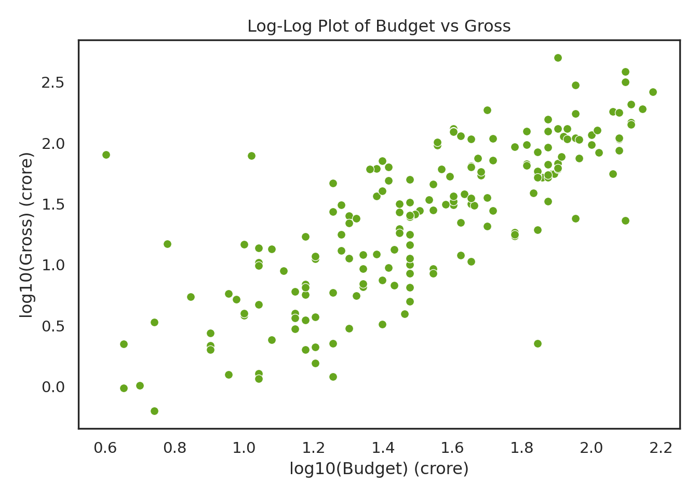
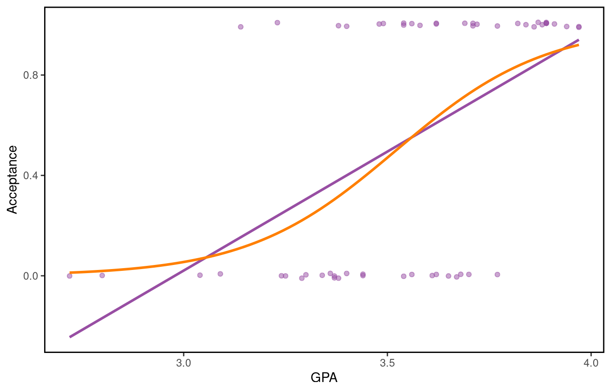

See how a generalised linear model differs from a linear model, including the approach taken in logistic regression
Meet the exponential family of distributions
Be able to identify the key components of a generalised linear model (GLM)
Appreciate the use of likelihoods, maximum likelihood estimation, and the definition of deviance in GLM modelling
Appreciate the consequences of using maximum likelihood estimation for inference, including confidence intervals, and the use of deviance in likelihood ratio tests
These outcomes are further reinforced with concrete examples in coming weeks.
7.1 Introduction and motivating examples
In this course we will extend the theory of linear regression models to non-normal responses. Before we begin with introducing the class of models known as Generalised Linear Models (GLMs), we will briefly illustrate why linear models are not sufficient for all types of data. Throughout the course, we will see how we can deal with a variety of situations where the linear model may not be adequate.
The main objective of this week’s learning material is to introduce Generalised Linear Models (GLMs), which extend the linear model framework to outcome variables that don’t follow the normal distribution. GLMs can be used to model non-normal continuous outcome variables, but they are most frequently used to model binary, categorical or count data. We will focus on these latter types of outcome variables. To see why extensions to the normal linear model are needed, let’s look at a couple of examples, one where the normal linear model is appropriate and one where it’s not.
Example 1: Bollywood box office revenue
Possibly the simplest scenario of a predictive model is when we want to predict an outcome variable based on a predictor which displays a linear relationship to the variable of interest. Consider the following dataset on Bollywood film revenues (sourced from http://www.bollymoviereviewz.com) which contains data on 190 films made during the period 2013-2017. We would like to predict the gross revenue of a film from the film’s budget. Both the gross revenue and the budget are measured in crore. Here are the first few rows of the data:
import numpy as npbollywood['log_Budget'] = np.log10(bollywood['Budget'])bollywood['log_Gross'] = np.log10(bollywood['Gross'])sns.set_style("white")sns.scatterplot(data=bollywood, x='log_Budget', y='log_Gross', color="#66a61e")plt.xlabel("log10(Budget) (crore)")plt.ylabel("log10(Gross) (crore)")plt.title("Log-Log Plot of Budget vs Gross")plt.tight_layout()plt.show()

Now let’s fit a model with the \(\log_{10}\) transformed gross revenue as the response (\(Y_{i}\)) and the \(\log_{10}\) transformed budget (\(x_{i}\)) as the explanatory/predictor variable.
We can use the lm() function to fit this linear model in R.
bol.lm <-lm(log10(Gross) ~log10(Budget), data = bollywood)
import statsmodels.formula.api as smfbol_lm = smf.ols('np.log10(Gross) ~ np.log10(Budget)', data=bollywood).fit()
The model equation in mathematical notation is \[E(Y_{i}) = \mu_i= \beta_0 + \beta_1 x_{i}; ~~~ \text{where the}~ Y_{i} \text{ are independent } N(\mu_{i}, \sigma^2),~~~i=1,...,190 \] The model fit is shown below:
Using the fitted model equation, predict the gross revenue for a film with a budget of (i) 10, (ii) 50, and (iii) 100 crore.
Hint: Remember that the variables have been log-transformed.
Answer 1
For the Bollywood box office revenue example, we can write down the fitted model equation from the summary(bol.lm): \[\log_{10}(\text{Gross}) =-0.62549 + 1.31955\times \log_{10}(\text{Budget})\]
We can use this equation to predict the gross revenue of a film by simply substituting the relevant budget value, and transforming the result from the log10 scale. Thus:
Now let’s look at a different kind of dataset, where the outcome we want to predict is not continuous-valued but binary. This is a dataset on admissions to US medical schools, which gives the admission status, GPA and standardised test scores for 55 medical school applicants from a liberal arts college in the US Midwest and it can be loaded from the Stat2Data package in R.
library(Stat2Data)data(MedGPA)
The first few rows of the data are given below.
Accept Acceptance Sex BCPM GPA VR PS WS BS MCAT Apps
1 D 0 F 3.59 3.62 11 9 9 9 38 5
2 A 1 M 3.75 3.84 12 13 8 12 45 3
3 A 1 F 3.24 3.23 9 10 5 9 33 19
4 A 1 F 3.74 3.69 12 11 7 10 40 5
5 A 1 F 3.53 3.38 9 11 4 11 35 11
6 A 1 M 3.59 3.72 10 9 7 10 36 5
Let us look at a plot of acceptance against GPA, adding a bit of jitter to make overlapping points more visible.
Call:
lm(formula = Acceptance ~ GPA, data = MedGPA)
Residuals:
Min 1Q Median 3Q Max
-0.7510 -0.3717 0.1352 0.3059 0.8464
Coefficients:
Estimate Std. Error t value Pr(>|t|)
(Intercept) -2.8240 0.7226 -3.908 0.000266 ***
GPA 0.9483 0.2027 4.678 2.04e-05 ***
---
Signif. codes: 0 '***' 0.001 '**' 0.01 '*' 0.05 '.' 0.1 ' ' 1
Residual standard error: 0.4267 on 53 degrees of freedom
Multiple R-squared: 0.2922, Adjusted R-squared: 0.2788
F-statistic: 21.88 on 1 and 53 DF, p-value: 2.043e-05
In mathematical notation, the value of the independent response \(Y_i\) is equal to 1 if the \(i\)th applicant is accepted and \(Y_i=0\) otherwise, where \(x_i\) refers to to the \(i\)th applicant’s college GPA for \(i=1,\dots,55\). The normal linear model assumes that the \(Y_i\) are independent \(N(\mu_i,\sigma^2)\) with \(\mu_i=\beta_0+\beta_1 x_i\), with the fitted model equation given by \(\hat{\mu}_i=-2.8240+0.9483x_i\).
One issue with this fit is that the predicted values of the response can take any real values, while acceptance can only take the value 0 or 1. And it is hard to argue that a variable taking only values 0 and 1 can be reasonably assumed to be normally distributed.
Key Idea: Mini introduction to generalised linear models
When faced with response variables which are clearly not normally distributed, and not even approximately normal, we take a multi-level approach.
We will introduce a logistic regression model to target the probability of acceptance. To do this we will setup our modelling a specfic way, making certain assumptions.
We begin by writing \(p_i=P(Y_i=1)\) to denote the probability of acceptance for the \(i\)th applicant. Then we assume that the \(Y_i\) are independent random variables which follow the \(\text{Bin}(1,p_i)\) (or Bernoulli(\(p_i)\)) distribution. Our big idea is that our regression model will choose \(p_i\) to be determined by the following equation:
i.e. we are still using a linear model underneath, but no longer directly fitting to the raw response variable values. The choice of function on the left will later be called a link function.
After some algebraic re-arrangement, this is equivalent to:
We can fit this model in R using the glm() function:
med.glm <-glm(Acceptance ~ GPA, data = MedGPA, family = binomial)
import statsmodels.api as smimport statsmodels.formula.api as smfmed_glm = smf.glm('Acceptance ~ GPA', data=MedGPA, family=sm.families.Binomial()).fit()
The argument family=binomial specifies that Acceptance follows a binomial distribution, with probability of success \(p_i\) (i.e. the probability of the \(i\)th applicant being accepted is \(p_i\)). In addition, the probability \(p_i\) is a function of \(x_i\) (i.e. the probability of the \(i\)th applicant being accepted is a function of that applicant’s GPA).
The default link function, used is \(\log\left(\dfrac{p_i}{1-p_i}\right)\). This function is known as the logit function. You can explicitly request it (unnecessarily) in R by writing family = binomial(link="logit") instead of family = binomial.
The fitted curve for the probability of acceptance is shown below (in orange).

We can see that that this curve fits the data better than the linear regression line, and that it gives predicted probabilities between 0 and 1, as desired. We could add predictors to the model to improve predictive performance – we’ll see more about that later.
The regression equation we have obtained allows us to predict the acceptance probability for a given GPA.
Task 2
Predict the acceptance probability for an applicant with a GPA of (i) 2.5, (ii) 3 (iii) 4. First do this “by hand” using the regression equation, then in R using the predict() function.
Hint: Thepredict()function will return values on the linear predictor scale unless you specifytype='response'which returns probabilities instead.
Answer 2
In the GPA and admission to medical school example, we can write down the fitted model equation from the summary(med.glm): \[\log\left(\frac{p_i}{1-p_i}\right) =-19.207 + 5.454 \times \text{GPA}\]
From the fitted equation, we can obtain the acceptance probability by solving for \(p_i\):
Section 2.3 from Mixed effects models and extensions in ecology with R -Zuur et al. discusses the appropriateness of the assumptions of the linear model.
7.2 What do the Bollywood box office and medical school admission examples have in common?
In both cases we have independent observations and we want to predict an outcome of interest (gross revenue/acceptance) based on an explanatory variable (budget/GPA).
In both cases we have a regression equation allowing us to predict the response from a given value of the predictor. However, in one case the response is assumed to follow the normal distribution, in the other the binomial distribution.
In both cases we fit a model to the mean of the response:
in the normal linear model the mean \(E(Y_i)=\mu_i\) is assumed to be a linear function of \(x_i\): \(\mu_i=\beta_0+\beta_1x_i\), and
in the logistic regression model the mean \(\mu_i=E(Y_i)=p_i\) is modelled through the logit link function. That is, in logistic regression \(\log\left(\dfrac{p_i}{1-p_i}\right)=\beta_0+\beta_1x_i\).
In slightly more general notation we can write \(g(\mu_i)=\boldsymbol{x}_i^{\intercal}\boldsymbol{\beta}\) to cover both cases, where \(\mu_i=E(Y_i)\) and \(g(\mu_i)\) for each distribution is given in the following table.
As you may already know, there is a framework for classifying distributions, inside which both the Normal (Gaussian) and Binomial distributions can be seen as specific examples from the larger exponential family.
So are the Poisson, the Negative Binomial, Gamma distribution, Bernoulli (covered by Binomial already) and many others.
Definition 1: Exponential family of distributions
Consider a random variable \(Y\) whose probability density function (p.d.f.) or probability mass function (p.m.f.) depends on parameter \(\theta\). The distribution belongs to the exponential family if it can be written as \[
f(y; \theta) = \exp \Big[a(y) b(\theta)+c(\theta) + d(y) \Big].
\] The term \(b(\theta)\) is called the natural parameter. If \(a(y)=y\) the distribution is said to be in canonical form.
Example 4: Normal distribution is a member of exponential family
Consider \(Y \sim N(\theta, \sigma^2)\) with p.d.f. \[
\begin{aligned} f(y; \theta) = \frac{1}{\sqrt{2 \pi \sigma^2}}\exp \left[ -\frac{1}{2\sigma^2} (y-\theta)^2\right], \hspace{0.5cm} -\infty <y<\infty.\end{aligned}
\] If we are interested in estimating \(\theta\), the variance, \(\sigma^2\), can be regarded as a nuisance parameter (which we may need to estimate at some other point).
Using the fact that \(\blacksquare = \exp\left(\log(\blacksquare)\right)\), we rewrite the p.d.f. as \[
\begin{aligned} f(y; \theta) = \exp \left[-\dfrac{y^2}{2\sigma^2}+\dfrac{y \theta}{\sigma^2} -\dfrac{\theta^2}{2\sigma^2}-\dfrac{1}{2}\log(2 \pi \sigma^2)\right]\end{aligned}
\] we can see that this is of exponential family form with
Table 7.1: Normal distribution exponential family identification (for the case of fixed variance)
So \(a(y)=y\) meaning we can say it’s in canonical form, and our natural parameter is \(b(\theta)=\frac{\theta}{\sigma^2}\).
Task 3
Show that the binomial distribution \(\text{Bin}(n,p)\) is a member of the exponential family.
Answer 3
Consider \(Y \sim \text{Bin}(n,\theta)\) with p.m.f. \[
\begin{aligned} f(y; \theta) = \binom{n}{y} \theta^y (1-\theta)^{n-y} \text{for } y=0,1,\dots,n. \end{aligned}
\] With extensive use of the same \(\blacksquare = \exp\left(\log(\blacksquare)\right)\) trick, plus the log laws, we rewrite the p.m.f. as \[
\begin{aligned} f(y; \theta) &= \exp \left[ y \log \theta - y \log (1-\theta) + n \log(1-\theta) +\log \binom{n}{y} \right] \\ &= \exp \left[ y \log \frac {\theta}{1-\theta} + n \log(1-\theta) +\log \binom{n}{y} \right] \end{aligned}
\]
we see that this is a member of the exponential family in canonical form, and its natural parameter is given by: \(b(\theta)= \log \left(\dfrac{\theta}{1-\theta} \right)\).
One of the reasons why seeing distrubutions as members of the exponential family is useful is that certain expectations and variances can be calculated for all such distributions simultaneously, using the general format.
In particular,
\[
E[a(Y)] = -\dfrac{c'(\theta)}{b'(\theta)}
\] and \[
\mathrm{Var}[a(Y)] =\dfrac{b''(\theta)c'(\theta)-c''(\theta)b'(\theta)}{[b'(\theta)]^3}.
\]
These may prove useful at some point, along with further useful properties of exponential family distributions related to the score function (we provide the general definition first).
Definition 2: Score statistic
Writing \(l(\theta; y)\) for the log-likelihood, we define the score statistic\(U\), by
\[
U\equiv \frac{\!\textrm{d}^{} l(\theta;y)}{\textrm{d}\theta^{}},
\] i.e. as the derivative of the log-likelihood \(l(\theta;y)\) with respect to the parameter \(\theta\).
Recall, that for exponential family distributions the log-likelihood is always just \[
l(\theta; y) = a(y)b(\theta)+c(\theta) + d(y).
\] and so the score statistic is simply \[
U(\theta;y)=\frac{\!\textrm{d}^{} l(\theta;y)}{\textrm{d}\theta^{}}=a(y)b'(\theta)+c'(\theta)
\]
The definition of the score function gives a new descriptive way to approach solving the maximum likelihood estimation problem. If we want to maximize the likelihood, then we typically just solve for the derivative being zero. So the maximum likelihood estimate\(\hat{\theta}\) for any distributions in the exponential family can be found by solving \[
U\equiv \frac{\!\textrm{d}^{} l(\theta;y)}{\textrm{d}\theta^{}} = 0.
\]
We can also think of the score statistic, \(U=a(Y) b'(\theta)+c'(\theta)\), as a random variable in its own right, which means we can calculate its expectation \[
\mathrm{E}(U)= b'(\theta)E[a(Y)]+c'(\theta)=b'(\theta)\left[-\frac{c'(\theta)}{b'(\theta)} \right]+c'(\theta)=0,
\] which we note is always zero; and its variance \[
\mathrm{Var}(U)=[b'(\theta)^2]\mathrm{Var}[a(Y)].
\]
This leads us to a very important concept in statistical inference, called Fisher information, which we can use to obtain standard errors for maximum likelihood estimates of GLM coefficients.
Definition 3: Fisher’s information
The Fisher Information, denoted as \(\mathcal{I}\), is given by: \[
\mathcal{I} \equiv \mathrm{Var}(U)=E(U^2)=E\left[\left(\frac{\!\textrm{d}^{} l(\theta;y)}{\textrm{d}\theta^{}}\right)^2\right]=E\left[\frac{\!\textrm{d}^{2} l(\theta;y)}{\textrm{d}{\theta}^{2}}\right].
\]
The variance of the maximum likelihood estimates tells us about the amount of information that an observed random variable carries about an unknown parameter in the model that is linked to a distribution.
As we will see shortly, the score and information play a key role in parameter estimation and in obtaining standard errors for the coefficient estimates of a GLM.
Having defined the exponential family of distributions, we are now ready to formally define a GLM.
Chapter 8 from Mixed effects models and extensions in ecology with R -Zuur et al. contains a more in-depth discussion of the exponential family.
7.4 Generalised Linear Models
7.4.1 The definition
Definition 4: Generalised Linear Models
Let \(Y_i\) be independent responses from an exponential family distribution in canonical form and \(\mu_i=E(Y_i)\), \(i=1, \dots, n\).
A generalised linear model (GLM) is a model of the form \[
g(\mu_i) = \boldsymbol{x}_i^{\intercal} \boldsymbol{\beta}
\tag{7.1}\]
where \(\boldsymbol{\beta}\) is a \(p\)-dimensional parameter vector, \(\boldsymbol{x}_i^{\intercal}\) is the \(i\)th row of the design matrix \(\boldsymbol{X}\), and \(g()\) is a monotonic, differentiable function called the link function.
A GLM generalises the normal linear model by allowing:
a response variable with a distribution other than normal, but still a member of the exponential family of distributions; and
a non-trivial relationship between the response and the linear component of the form \(g(\mu_i) = \boldsymbol{x}_i^{\intercal} \boldsymbol{\beta}\) where \(g()\) is the link function.
Importantly, \(g(m)\) doesn’t need to be \(g(m)=m\), which it was in our ordinarly linear models.
7.4.2 The random component
Suppose \(Y_1,\dots, Y_n\) are independent random variables which follow an exponential family distribution such that \(f(y_i; \theta_i)=\exp[y_i b(\theta_i)+c(\theta_i)+d(y_i)]\) for \(i=1,\dots,n\).
The joint p.d.f. (or p.m.f.) of the \(Y_i\) is \[
f(y_1,\dots,Y_n; \theta_1,\dots, \theta_n) =
\prod_{i=1}^n \exp[y _i b(\theta_i)+c(\theta_i)+d(y_i)]
\] So, \[
f(y_1,\dots,Y_n; \theta_1,\dots, \theta_n) = \exp \left[ \sum_{i=1}^n y_i b(\theta_i)+ \sum_{i=1}^n c(\theta_i) +\sum_{i=1}^n d(y_i) \right]
\tag{7.2}\]
The distribution of each \(Y_i\) is in canonical form and depends on a single parameter \(\theta_i\).
7.4.3 The systematic component
Associated with each \(y_i\) is a vector \(\boldsymbol{x}_i=(x_{i1},x_{i2},\dots,x_{ip})^\intercal\) of values of \(p\) explanatory variables. The response, \(Y_i\), depends on the explanatory variables through a linear component, \[
\eta_i=\boldsymbol{x}_i^{\intercal} \boldsymbol{\beta}=\beta_1x_{i1}+\dots + \beta_p x_{ip}
\] for \(i=1,\dots, n.\)
We will use the link function below to transform between the \(y_i\) and the \(\eta_i\) (though in some case we may use \(y_i=\eta_i\)), but the choice to use the values of the \(p\) covariates to determing the \(\eta\) is the systematic component.
The \(i\)th row of our design matrix, \(\boldsymbol{X}\), is \(\boldsymbol{x}_i^{\intercal}\); and \(\boldsymbol{\beta}=(\beta_1,\dots, \beta_p)^\intercal\) is the parameter vector. Thus, as in linear models, the design matrix is given by \[\boldsymbol{X} = \left[ \begin{array}{c} \boldsymbol{x}_1^\intercal \\ \vdots \\ \boldsymbol{x}_n^\intercal \end{array}\right] = \left[ \begin{array}{ccc} x_{11} & \dots & x_{1p} \\ \vdots & & \vdots \\ x_{n1} & \dots & x_{np} \end{array}\right].\]
7.4.4 The link function
The parameters \(\theta_i\) in Equation 7.2 are usually not of direct interest as they are not available to us. Instead, we are interested in a smaller set of parameters \((\beta_1,\dots, \beta_p)\), and assume that \(Y_i\) depends on these through the linear predictor \(\eta_i\). The link between the distribution of the \(Y_i\) and the linear predictor \(\eta_i\) is provided by the link function \(g()\), for which \(g(\mu_i)=\eta_i=\boldsymbol{x}_i^{\intercal} \boldsymbol{\beta}.\) Here \(\mu_i=E(Y_i)\) and \(g()\) is a monotone, differentiable function. Although any one-to-one function could be used in principle, certain choices of link function can offer great simplification. In particular, the link function can be chosen so that the natural parameter, \(b(\theta_i)\), is proportional to the linear component \(\eta_i=\boldsymbol{x}_i^{\intercal} \boldsymbol{\beta}\). Such a link function is known as the canonical link. The following table shows the canonical link function for some of the most common distributions.
Chapter 6 from Extending linear models with R: generalized linear, mixed effects and nonparametric regression models - Faraway gives an overview of GLMs and their properties.
Sections 9.1 and 9.2 from Mixed effects models and extensions in ecology with R -Zuur et al. cover the general formulation of GLMs.
Let us now look at some examples of generalised linear models and their components.
Example 5: Normal linear model
Consider \(E(Y_i)=\mu_i = \boldsymbol{x}_i^{\intercal} \boldsymbol{\beta}\) where the \(Y_i\) are independent \(N(\mu_i,\sigma^2)\) for \(i=1,\dots,n\). Here \(g(\mu_i)=\mu_i\), the identity link. You may be more familiar with this model written as \(\boldsymbol{Y}=\boldsymbol{X}\boldsymbol{\beta}+\boldsymbol{\epsilon}\) where \(\boldsymbol{\epsilon}=\left[ \begin{array}{c} \epsilon_1\\ \vdots \\ \epsilon_n \end{array} \right]\) with the \(\epsilon_i\) independent, identically distributed \(N(0,\sigma^2)\) random variables.
So the standard linear model is an example of a generalised linear model. In much the same way a square is a rectangle.
Example 6
Consider a model for whether students pass an end of semester exam at the first attempt. A Bernoulli variable \(Y\) takes the value \(1\) if they pass, and \(0\) if not. Each student’s performance contains some uncertainty, and is modelled by \[
Y_i \sim \mathrm{Bernoulli}(p_i),
\] where \(p_i\) is their probability of passing.
Student \(i\) attends a number of lectures, \(l_i\), a number of labs \(m_i\) and spends a time \(t_i\) studying outside of classes.
We choose a model where these three covariates determine (through the link function) the probability of passing for each student, which as usual is the mean of \(Y_i\).
Since we’re working with a Bernoulli (or Binomial) our chosen linear model is that \[
g(p_i) = \log\left(\frac{p_i}{1-p_i}\right) = \beta_0 + \beta_1l_i + \beta_2m_i+\beta_3t_i.
\] So \(g(p_i) = \boldsymbol{x}_i^{\intercal} \boldsymbol{\beta}\) with \(\boldsymbol{x}_i = \left(1, l_i,m_i, t_i\right)\) and \(\boldsymbol{\beta} = \left(\beta_0, \beta_1, \beta_2, \beta_3\right)\).
Example 7: A model for mortality rates
The number of deaths, \(Y\), in a population in a year can be modelled by the Poisson distribution \[
f(y; \mu)=\frac{\mu^y e^{-\mu}}{y!}, \quad y=0,1,2,\dots.
\] However the population itself changes in size over time, and different groups in the population have different average death rates. Recall that a sum of Poissons is still Poisson.
So we can model the expected total number of deaths per year in a population as \(E(Y)=\mu\) and it can be modelled by \[
E(Y)=\mu = n \lambda^*
\] where \(n\) is the population size (in units of 100,000s) and \(\lambda^*\) is the death rate per 100,000 people.
To allow for different death rates by age, we can allow for the \(\lambda^*\) to vary for different sub-populations.
Let \(Y_1,\dots, Y_n\) be the numbers of deaths occurring in successive age groups. A popular model we assume is that \(E(Y_i)=\mu_i = n_i \exp(\theta \times i)\) where \(Y_i \sim \mathrm{Poisson}(\mu_i)\) and
\(i=1\) for the age group 30-34,
\(i=2\) for age group 35-39,
\(\vdots\)
\(i=8\) for age group 65-69.
So in this example \(\lambda^*_i\) the death rate in sub-population \(i\) is being written as \(e^{\theta \times i}\), and \(n_i\) denotes the number of people in that \(i\)th group (in our chosen units).
This model can be identified as a generalised linear model if we choose a log link function, i.e. \(g(\mu_i) = \log \mu_i = \log n_i +\theta i\). Then we see that \(g(\mu_i)\) our function of the distribution mean can be seen as a linear combination of covariates \(\boldsymbol{x_i}\) and parameters \(\boldsymbol{\beta}\) if we define them like this: \[
\boldsymbol{x}_i^{\intercal}= (\log n_i, i) \text{ and } \boldsymbol{\beta}=(1, \theta)^{\intercal};
\] so then \[
g(\mu_i) = \boldsymbol{x}^{\intercal} \boldsymbol{\beta}.
\] Each subpopulation comes with two covariates: \(\log(n_i)\) the log of its population, and it’s label \(i\). The only parameter to estimate is \(\theta\) as we know exactly how \(\log(n_i)\) affects \(\log(\mu_i)\) already by our model assumption.
When we see this idea later we will call the term \(\log n_i\) is an offset, we will especially see more about it when we talk about models for counts.
Task 4
Formulate the model used in the medical school admissions example as a GLM.
Answer 4
Random component: Let \(Y_i=1\) if the \(i\)th applicant is accepted to medical school and \(Y_i=0\) if not. We assume that the \(Y_i\) are independent responses from \(\text{Bin}(1,p_i)\), with \(E(Y_i)=p_i\) for \(i=1,\dots,55\).
Systematic component: \(\beta_0+\beta_1 x_i\) where \(x_i\) is the \(i\)th applicant’s GPA and \(\beta_0\) and \(\beta_1\) are parameters to be estimated.
Link function: \(g(p_i)=\log \left(\dfrac{p_i}{1-p_i} \right)\) (logit link)
Equation of the GLM: \[\log \left(\dfrac{p_i}{1-p_i} \right)=\beta_0+\beta_1 x_i.\]
7.5 Maximum likelihood estimation of GLM coefficients
In a generalised linear model we are interested in the parameters \(\beta_1,\dots,\beta_p\) that describe how the response depends on the explanatory variables. We use the observed \(y_1,\dots,y_n\) to maximise the log-likelihood function \[
l(\boldsymbol{\beta},\boldsymbol{y})=\sum_{i=1}^n y_i b(\theta_i)+ \sum_{i=1}^n c (\theta_i) +\sum_{i=1}^n d(y_i)
\tag{7.3}\]
obtained from equation (Equation 7.2). This depends on \(\boldsymbol{\beta}\) through
The maximisation procedure results in \(p\) simultaneous equations for \(\hat{\boldsymbol{\beta}}\), which are usually solved numerically using the method of scoring (also known as Fisher’s scoring method) and an algorithm called iteratively reweighted least squares.
Supplement 1
Here we present in some detail how the maximum likelihood estimates of the coefficients of a GLM are obtained. Suppose that we are interested in estimating the parameter vector \((\beta_1,\dots, \beta_p)^\intercal\) in a GLM. To find the maximum likelihood estimates \(\hat{\beta}_j\) we need the scores (multivariate version of the score from Definition 2) expressed as functions of the \(\beta_j\):
Note that the scores depend on \(\boldsymbol{\beta}\) through \(\mu_i=E(Y_i)\) and through \(\mathrm{Var}(Y_i)\). The variance-covariance matrix of the \(U_j\) has terms \(\mathcal{\mathcal{I}}_{jk}=E(U_jU_k)\) and is known as the (Fisher) information matrix. This is the multivariate version of Definition 3. The elements of matrix \(\mathcal{\mathcal{I}}\) can be obtained from Equation 7.8:
Here we have used the fact that \(E[(Y_i-\mu_i)(Y_l-\mu_l)]=0\) by the independence of the \(Y_i\). Notice that the information matrix can be written as
The information matrix \(\mathcal{I}(\boldsymbol{\beta})\) depends on \(\boldsymbol{\beta}\) through \(\boldsymbol{\mu}\) and through \(\mathrm{Var}(Y_i)\) for \(i=1,\dots,n\).
where \(\hat{\boldsymbol{\beta}}^{(m)}\) is the vector of estimates of \((\beta_1,\dots \beta_p)\) at the \(m\)th iteration, \([\mathcal{\mathcal{I}}^{(m-1)}]^{-1}\) is the inverse of the information matrix with elements \(\mathcal{\mathcal{I}}_{jk}\) given by Equation 7.9, and \(\boldsymbol{U}^{(m-1)}\) is the vector of elements given by Equation 7.8, all evaluated at \(\hat{\boldsymbol{\beta}}^{(m-1)}\). Substituting Equation 7.10 and Equation 7.12 in Equation 7.13 we obtain \[
\begin{aligned}
\hat{\boldsymbol{\beta}}^{(m)}&= \hat{\boldsymbol{\beta}}^{(m-1)}+\left[\boldsymbol{X}^\intercal \boldsymbol{W}^{(m-1)} \boldsymbol{X}\right]^{-1} \boldsymbol{X}^\intercal \boldsymbol{W}^{(m-1)} \boldsymbol{z}^{(m-1)}\\
&= \left[\boldsymbol{X}^\intercal \boldsymbol{W}^{(m-1)} \boldsymbol{X}\right]^{-1} \boldsymbol{X}^\intercal \boldsymbol{W}^{(m-1)}\boldsymbol{X} \hat{\boldsymbol{\beta}}^{(m-1)}+\left[\boldsymbol{X}^\intercal \boldsymbol{W}^{(m-1)} \boldsymbol{X}\right]^{-1} \boldsymbol{X}^\intercal \boldsymbol{W}^{(m-1)} \boldsymbol{z}^{(m-1)},
\end{aligned}
\] this simplifies slightly to \[
\hat{\boldsymbol{\beta}}^{(m)} =\left[\boldsymbol{X}^\intercal \boldsymbol{W}^{(m-1)} \boldsymbol{X}\right]^{-1} \boldsymbol{X}^\intercal \boldsymbol{W}^{(m-1)} (\boldsymbol{\eta}^{(m-1)}+\boldsymbol{z}^{(m-1)})
\tag{7.14}\]
This is the same form as the normal equations for weighted least squares, except that it has to be solved numerically because \(\boldsymbol{\eta}\), \(\boldsymbol{z}\) and \(\boldsymbol{W}\) depend on \(\hat{\boldsymbol{\beta}}\).
This is why the method to obtain maximum likelihood estimators for GLMs is called iteratively (re)weighted least squares (IRWLS). The procedure begins by using an initial approximation \(\hat{\boldsymbol{\beta}}^{(0)}\) to obtain estimates of \(\boldsymbol{\eta}\), \(\boldsymbol{z}\) and \(\boldsymbol{W}\). Then \(\hat{\boldsymbol{\beta}}^{(1)}\) is obtained from Equation 7.14 and is used to update \(\boldsymbol{\eta}\), \(\boldsymbol{z}\) and \(\boldsymbol{W}\). The iterative process continues until the difference between successive approximations \(\hat{\boldsymbol{\beta}}^{(m-1)}\) and \(\hat{\boldsymbol{\beta}}^{(m)}\) is sufficiently small.
7.6 Inference for GLMs
We will now turn our attention to inference for GLMs, mainly through hypothesis tests and the construction of confidence intervals for the parameters of interest. For that we need some sampling distribution results.
7.6.1 Sampling distribution of the MLE
The asymptotic (large sample) distribution for \(\hat{\boldsymbol{\beta}}\) is
where \(\chi^2(p)\) refers to the chi-squared distribution with \(p\) degrees of freedom and \(N_p(\boldsymbol{\beta},\mathcal{I}^{-1})\) refers to a multivariate (\(p\)-dimensional) normal distribution with vector mean \(\boldsymbol{\beta}\) and \(p \times p\)-dimensional variance-covariance matrix \(\mathcal{I}^{-1}\).
In the one-dimensional case, what this says is that the MLE \(\hat{\beta}\) is approximately normally distributed with mean \(\beta\) and variance \(\mathcal{I}^{-1}\) (scalars).
This allows us to perform hypothesis tests and construct confidence intervals for the model parameters.
Definition 5: Wald statistic
The Wald statistic, also known as the z-statistic, for each of the model parameters \(\left \lbrace \beta_j\right \rbrace,~j=1,\dots,p\), is equal to the coefficient estimate, \(\hat{\beta}_j\), over its standard error, \(\text{se}(\hat{\beta}_j)\).
Under the null hypothesis \(H_0: \beta_j=0\), and using the asymptotic normality result for the MLE, the Wald statistic is approximately distributed as standard normal. In other words, we have that \[
z=\frac{\hat{\beta}_j}{\text{se}(\hat{\beta}_j)} \overset{\text{approx}}{\sim} N(0,1).
\] This allows us to perform the Wald test, which compares the z-statistic to the extreme percentiles of a standard normal distribution.
Also using this asymptotic normality result, we can construct an approximate 95% confidence interval for \(\beta_j\) by taking \[
\hat{\beta}_j\pm 1.96\text{se}(\hat{\beta}_j).
\] Here 1.96 is the 97.5th percentile of the standard normal distribution.
Example 8: Hypothesis test and confidence interval for the GPA coefficient in the model for medical school admissions
Recall the logistic regression model for the medical school admissions data. In the output we see the MLEs of \(\beta_0\) and \(\beta_1\) in the Estimate column. These are obtained by solving the likelihood equations numerically using Fisher’s scoring method (notice the Number of Fisher Scoring iterations information towards the end.)
summary(med.glm)
Call:
glm(formula = Acceptance ~ GPA, family = binomial, data = MedGPA)
Coefficients:
Estimate Std. Error z value Pr(>|z|)
(Intercept) -19.207 5.629 -3.412 0.000644 ***
GPA 5.454 1.579 3.454 0.000553 ***
---
Signif. codes: 0 '***' 0.001 '**' 0.01 '*' 0.05 '.' 0.1 ' ' 1
(Dispersion parameter for binomial family taken to be 1)
Null deviance: 75.791 on 54 degrees of freedom
Residual deviance: 56.839 on 53 degrees of freedom
AIC: 60.839
Number of Fisher Scoring iterations: 4
We can also see the standard errors for \(\hat{\beta_0}\)(Intercept) and \(\hat{\beta_1}\) (GPA coefficient). These are obtained from the observed information matrix, which is computed during the iterative estimation procedure. Remember that the variance of \(\boldsymbol{\beta}\) is estimated by \(\mathcal{I}^{-1}\), the inverse of the information matrix. The R function vcov()returns this estimated variance-covariance matrix of the model coefficients:
The diagonal entries of this matrix are the estimated variances for \(\hat{\beta_0}\) and \(\hat{\beta_1}\) and the off-diagonal entries give the estimated covariance between \(\hat{\beta_0}\) and \(\hat{\beta_1}\). The standard errors shown in the output (Std. Error column) are the square roots of the estimated variances:
sqrt(diag(vcov(med.glm)))
(Intercept) GPA
5.628726 1.579169
The z value column gives the Wald statistics that test the hypotheses \(H_0: \beta_0=0\) and \(H_0: \beta_1=0\). We are almost never interested in testing whether the intercept term is zero or not, we focus instead on the coefficients of the explanatory variables in the model. So for \(H_0: \beta_1=0\) the \(z\) value equals 3.454 and is obtained by taking the coefficient estimate and dividing by its standard error \[z=\frac{\hat{\beta_1}}{\text{se}(\hat{\beta}_1)}=\frac{5.454}{1.579}=3.454.\] Under \(H_0\), \(z\) should approximately follow the standard normal distribution, \(N(0,1)\). The \(p\)-value shown as Pr(>|z|) in the output is the probability of obtaining a value as extreme as \(z\) or larger in absolute value, assuming the null hypothesis is true. A small \(p\)-value indicates that the \(z\) value is unlikely to come from a \(N(0,1)\) distribution and leads to rejecting \(H_0\). As the \(p\)-value for our GPA coefficient is small (0.000553) we can therefore conclude that we reject our null hypothesis that the GPA coefficient is zero, ie. that the GPA term is worth keeping in the model.
A totally equivalent alternative would be to instead create the approximate 95% confidence interval for the GPA coefficient, by using \(\hat{\beta}_j\pm 1.96\text{se}(\hat{\beta}_j)\):
5.454-1.96*1.579
[1] 2.35916
5.454+1.96*1.579
[1] 8.54884
The resulting interval is \((2.36,8.55)\), and since it does not include zero, we conclude that the GPA coefficient is significant.
7.6.2 Deviance
To assess the adequacy of a model of interest, we compare it with the saturated (or full) model, which has the maximum number of parameters that can be estimated. For data with \(n\) observations, \(y_1,\dots, y_n\), each with a different parameter in \(\boldsymbol{X}^\intercal \boldsymbol{\beta}\), the saturated model can be specified with \(n\) parameters.
Key Idea
Recall that for our GLM we are using Equation 7.1 to determine our best \(\beta\) values, and that we have one equation for each such \(i\) in \(1,2,\ldots,n\). So our \(\beta_1, \beta_2, \ldots, \beta_p\) coefficients will typically be being chosen to try and match the observed means \(\mu_i\) of our \(y_i\) values simultaneously across \(n\) equations. A saturated model includes as many coefficients as equations and thus allows for ‘perfect’ selection of all the \(\mu_i\) values simultaneously. We still have uncertainty as our model for \(Y_i\) remains random, and note that having more than \(n\) coefficients doesn’t help further, it’s as if we can already essentially manually select all of our \(\mu_i\) values.
If we have replicates (i.e. duplicated \(\boldsymbol{x}\) rows), the maximum number of parameters in the saturated model can be less than \(n\).
For the saturated model which uses \(m\) parameters (normally \(m=n\)) we write \(\boldsymbol{\beta}_{\max}\) and \(\hat{\boldsymbol{\beta}}_{\max}\) for the corresponding parameter vector and its MLE.
Then let \(L(\hat{\boldsymbol{\beta}}_{\max};\boldsymbol{y})\) be the likelihood evaluated at \(\hat{\boldsymbol{\beta}}_{\max}\), i.e. the likelihood for the saturated model; and let \(L(\hat{\boldsymbol{\beta}};\boldsymbol{y})\) be the maximum value of the likelihood for our model of interest (where we used \(p\) covariates).
The likelihood ratio\[
\lambda=\frac{L(\hat{\boldsymbol{\beta}}_{\max};\boldsymbol{y})}{L(\hat{\boldsymbol{\beta}};\boldsymbol{y})}
\] provides a measure of how well the model of interest fits compared with the full model. In practice, we often use the logarithm of the likelihood ratio (since it has more neatly provable asymptotic properties), \[
\log \lambda = l(\hat{\boldsymbol{\beta}}_{\max};\boldsymbol{y})-l(\hat{\boldsymbol{\beta}};\boldsymbol{y}).
\]
Large values of \(\log \lambda\) suggest that the model of interest is a poor description of the data relative to the full model. Note the top of the fraction is always at least as large as the bottom so the minimum of \(\lambda\) is \(1\). How large a value of \(\log \lambda\) is large? To answer this question we can obtain a critical region using the sampling distribution of \(\log \lambda\). In fact, we will work with the quantity \(2\log \lambda\), which we call the deviance.
Definition 6: Deviance
The deviance, \(D\), is defined as \[
D=2\log \lambda =2\left[ l(\hat{\boldsymbol{\beta}}_{\max};\boldsymbol{y})-l(\hat{\boldsymbol{\beta}};\boldsymbol{y})\right]
\] where \(l(\hat{\boldsymbol{\beta}}_{\max};\boldsymbol{y})\) is the maximised log-likelihood for the saturated model and \(l(\hat{\boldsymbol{\beta}};\boldsymbol{y})\) is the maximised log-likelihood for the model of interest.
We won’t go into the theory here, but this is a likelihood-ratio test, which you have likely studied elsewhere. Under various conditions (especially large \(n\)) this quantity \(D\) will have an approximately \(\chi^2\) distribution, with parameter equal to the difference in degrees of freedom between the two models considered.
This means that for a GLM that fits the data well, the approximate distribution of the deviance, \(D\), is \(\chi^2_{m-p}\) where \(m\) is the number of parameters in the saturated model and \(p\) is the number of parameters in the model of interest. We can therefore use this approximate distribution to evaluate whether the assumption here that our model does indeed fit the data well, was reasonable.
We are implicitly assuming that our top level saturated model is at least reasonable, in that our distributional assumptions for the \(Y_i\) are correct. Beyond this, the deviance allows us to see whether the restriction placed on our \(\eta_i\) values through limiting ourselves to just \(p\) covariates still does a good job of fitting the data.
Example 9: Deviance for a binomial model
Suppose \(Y_1, \dots, Y_n\) are independent with \(Y_i \sim \mathrm{Bin}(n_i, p_i)\) for \(i=1,\dots, n\). The likelihood function looks like this
For the full model all the \(p_i\)’s can be separately determined, so \(\boldsymbol{\beta}=(p_1, \dots, p_n)^\intercal\) and with algebra (which we’ll skip) it can show that the optimal/maximizing choices are \(\hat{p}_i=y_i/n_i\). This gives
For any model with \(s<n\) parameters, the mle for \(p_i\), which we call \(\hat{p}_i\) will come from the fitted values \(\hat{y}_i\) from the linear model. In the saturated model we were able to ensure \(\hat{y}_i=y_i\) for all \(i\), but now we likely cannot. So in Equation 7.17 we replace \(p_i\) with \(\hat{p}_i = \frac{\hat{y}_i}{n_i}\) to obtain
Suppose \(Y_1, \dots, Y_n\) are independent with \(Y_i \sim N(\mu_i, \sigma^2)\) and \(E(Y_i)= \mu_i=\boldsymbol{X}^\intercal_i \boldsymbol{\beta}\) for \(i=1,\dots, n\) . The likelihood function is
For the saturated model, with \(n\) parameters, we can essentially control all the \(\mu_1, \dots, \mu_n\). The MLEs are \(\hat{\mu}_i=y_i\) and so the maximum value of the log-likelihood becomes
For any other model with \(p<n\) parameters, the MLE of \(\boldsymbol{\beta}\) is \(\hat{\boldsymbol{\beta}} = (\boldsymbol{X}^\intercal \boldsymbol{X})^{-1} \boldsymbol{X}^\intercal \boldsymbol{y}.\) The corresponding maximised log-likelihood function is
The deviance, \(D = 2\left[l(\hat{\boldsymbol{\beta}}_{\max};\boldsymbol{y})-l(\hat{\boldsymbol{\beta}};\boldsymbol{y})\right]\) is therefore \[
D = \frac{1}{\sigma^2}\sum_{i=1}^n \left(y_i-\boldsymbol{x}_i^{\intercal} \hat{\boldsymbol{\beta}}\right)^2 =\frac{1}{\sigma^2} \sum_{i=1}^n \left(y_i-\hat{\mu}_i\right)^2.
\tag{7.22}\]
It turns out that the (exact) distribution of \(D\) is \(\chi^2(n-p)\). If the model fits the data well, then \(D \sim \chi^2(n-p)\), and the expected value of \(D\) will be \(n-p\), since the expectation of a chi-squared random variable is equal to its degrees of freedom.
However, we are not able to use this chi-squared distribution directly, because the expression for the deviance contains the nuisance parameter \(\sigma^2\). As you may remember from your linear regression courses, we end up using F tests instead.
Example 11: Deviance for a Poisson model
Let \(Y_1, \dots, Y_n\) be independent random variables with \(Y_i \sim Po(\mu_i)\). Then the likelihood function is
Suppose that for the model of interest with \(p<n\) parameters the MLE, \(\hat{\boldsymbol{\beta}}\), can be used to obtain \(\hat{\mu}_i\) and hence fitted values \(\hat{y}_i=\hat{\mu}_i\) (because \(E(Y_i)=\mu_i\)). For the model of interest the maximum value of the log-likelihood is \[
l(\hat{\boldsymbol{\beta}}; \boldsymbol{y}) = \sum y_i \log \hat{y}_i - \sum \hat{y}_i -\sum \log (y_i!).
\tag{7.25}\]
For most models \(\sum y_i=\sum \hat{y_i}\), so the deviance can be written as \[
D=2 \sum y_i \log\left(\frac{y_i} {\hat{y}_i}\right)= 2 \sum o_i \log\left(\frac{o_i} {e_i}\right),
\]
where \(o_i\) denotes the observed value and \(e_i\) the expected value of \(y_i\). The deviance can be computed from the data and compared with the \(\chi^2(n-p)\) distribution.
Consider the data below for which the \(Y_i\) are assumed to be independent observations from a Poisson distribution.
\(y_i\)
2
3
6
7
8
9
10
12
15
\(x_i\)
-1
-1
0
0
0
0
1
1
1
We fit a model of the form \(\mu_i=\beta_1 + \beta_2 x_i\). The fitted values are \(\hat{y}_i=\hat{\beta}_1 + \hat{\beta}_2 x_i\) where \(\hat{\beta}_1 =7.45163\) and \(\hat{\beta}_2= 4.93530\). The deviance is \(1.8947\), which is small compared with \(n-p=7\), indicating no lack of fit.
Task 5
Verify the value 1.8947 for the deviance given in the above example.
Answer 5
We need to get the fitted values \(\hat{y}_i\) for \(i=1,\dots,9\) and then substitute into the expression for the deviance.
Values here are displayed across two tables:
\(y_i\)
2
3
6
7
8
\(\hat{y}_i\)
2.51633
2.51633
7.45163
7.45163
7.45163
\(y_i \log\left(\frac{y_i}{\hat{y}_i} \right)\)
-0.45931
0.52743
-1.30004
-0.43766
0.56807
\(y_i\)
9
10
12
15
\(\hat{y}_i\)
7.45163
12.38693
12.38693
12.38693
\(y_i \log\left(\frac{y_i}{\hat{y}_i} \right)\)
1.69913
-2.14057
-0.38082
2.87115
So \(\sum_{i=1}^9 y_i \log\left(\frac{y_i} {\hat{y}_i}\right)=0.94738\) and \(D=2\sum_{i=1}^9 y_i \log\left(\frac{y_i} {\hat{y}_i}\right)=1.89476\).
Notice that since we only have three distinct \(x_i\) values, we only have three distinct \(\hat{y}_i\) values. This is the restriction we are imposing by using a linear model (though technically we have replicates so we may have had no choice here), our model must use the same \(\hat{y}_i\) whenever \(x_i=-1\), thus preventing us from matching \(\hat{y}_i\) exactly with each \(y_i\) – which would be ideal to minimize the likelihood.
In this case, since close \(x_i\) values has close \(y_i\) values, the likelihood after this restriction is not large compared with a case where we could set each \(\hat{y}_i=y_i\), so we didn’t see a lack of fit using our linear model.
7.6.3 Hypothesis testing using the deviance
As we’ve already seen, we can test hypotheses about the \(p\)-dimensional parameter vector \(\boldsymbol{\beta}\) by using the Wald statistic and the asymptotic distribution of the MLE.
Alternatively we can compare nested models \(M_0\) and \(M_1\) using the difference of their deviances. Let’s consider two such nested models, with \(q < p\) covariates:
We test \(H_0\) against \(H_1\) by considering \[
\begin{aligned}
D_0-D_1& =2\left[l(\hat{\boldsymbol{\beta}}_{\max}; \boldsymbol{y}) -l(\hat{\boldsymbol{\beta}}_0; \boldsymbol{y})\right]-2\left[l(\hat{\boldsymbol{\beta}}_{\max}; \boldsymbol{y}) -l(\hat{\boldsymbol{\beta}}_1; \boldsymbol{y})\right] \\
&=2\left[ l(\hat{\boldsymbol{\beta}}_1; \boldsymbol{y}) -l(\hat{\boldsymbol{\beta}}_0; \boldsymbol{y})\right]
\end{aligned}
\]
If both models describe the data well then \(D_0 \sim \chi^2(n-q)\), \(D_1 \sim \chi^2(n-p)\) and \(D_0-D_1 \sim \chi^2(p-q)\). If \(M_1\) describes the data well but \(M_0\) does not, then \(D_0-D_1\) will be larger than expected for a value from \(\chi^2(p-q)\). So, reject \(H_0\) if \(D_0-D_1> \chi^2(1-\alpha; p-q)\) that is, if the difference in deviances exceeds the upper \(100\times \alpha \%\) point of the \(\chi^2(p-q)\) distribution.
Example 12: Hypothesis test for the GPA coefficient in the model for medical school admissions, this time using deviances
Suppose that we want to test \(H_0: \beta_1=0\) in the medical school admissions example. We can perform this test using the deviances given in the output.
Call:
glm(formula = Acceptance ~ GPA, family = binomial, data = MedGPA)
Coefficients:
Estimate Std. Error z value Pr(>|z|)
(Intercept) -19.207 5.629 -3.412 0.000644 ***
GPA 5.454 1.579 3.454 0.000553 ***
---
Signif. codes: 0 '***' 0.001 '**' 0.01 '*' 0.05 '.' 0.1 ' ' 1
(Dispersion parameter for binomial family taken to be 1)
Null deviance: 75.791 on 54 degrees of freedom
Residual deviance: 56.839 on 53 degrees of freedom
AIC: 60.839
Number of Fisher Scoring iterations: 4
Here \(D_0\) is the null deviance, that is the deviance in the model that includes only the intercept (and no other predictors). \(D_1\) is the residual deviance, that is the deviance of the model of interest (the model with GPA included as a predictor). Under \(H_0\), \(D_0-D_1\) should be approximately distributed as \(\chi^2_1\). The 95th percentile of the \(\chi^2(1)\) distribution, sometimes written \(\chi^2(0.95; 1)\), is \(3.84\), and since \(D_0-D_1=75.791-56.839=18.952>3.84\) we can reject the null hypothesis. Again we conclude that GPA is a significant term in the model.